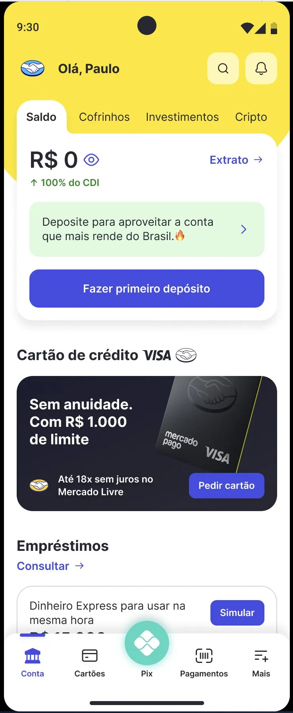
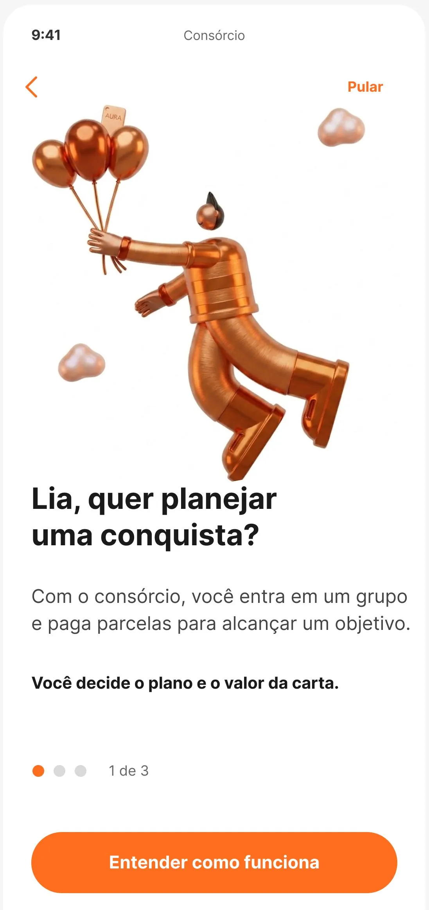
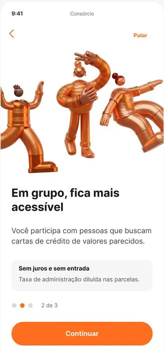
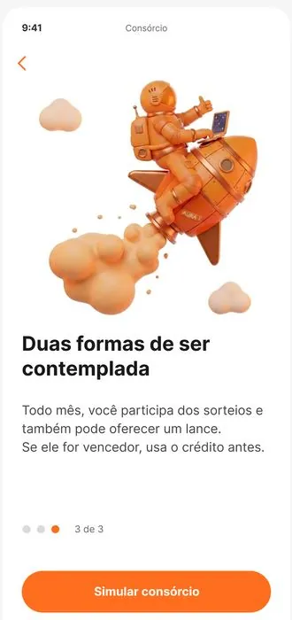

Fifteen years building disciplines, teams, and product experiences at scale — from editorial media to one of Latin America's largest fintechs.
I'm a design leader who came up through content — graphic design, content strategy, then product design leadership.
Today I lead 10 designers at Mercado Pago, one of Latin America's largest fintechs. I care about strategy backed by data, AI-augmented workflows, and developing the people I work with. I've built disciplines from scratch and I'm just as comfortable defining content strategy as I am leading a design org.
A snapshot from a previous quarter — plus a Content Design System, writing guide, checklist, individual-development framework and team-skills map, all created from scratch.

Leading a team of 10 designers across UX, UI and Content — from a transversal role spanning the whole product, not a single squad. Most of what changed here was project and people leadership: reorganizing how the team allocated time and ownership so decisions could be made deliberately instead of reactively. That groundwork is what made the Home redesign — and everything below — possible within a year.
The redesign itself took under six months of hands-on design work — the rest of the year went into building the conditions for it. Happy to walk through the full story live.


